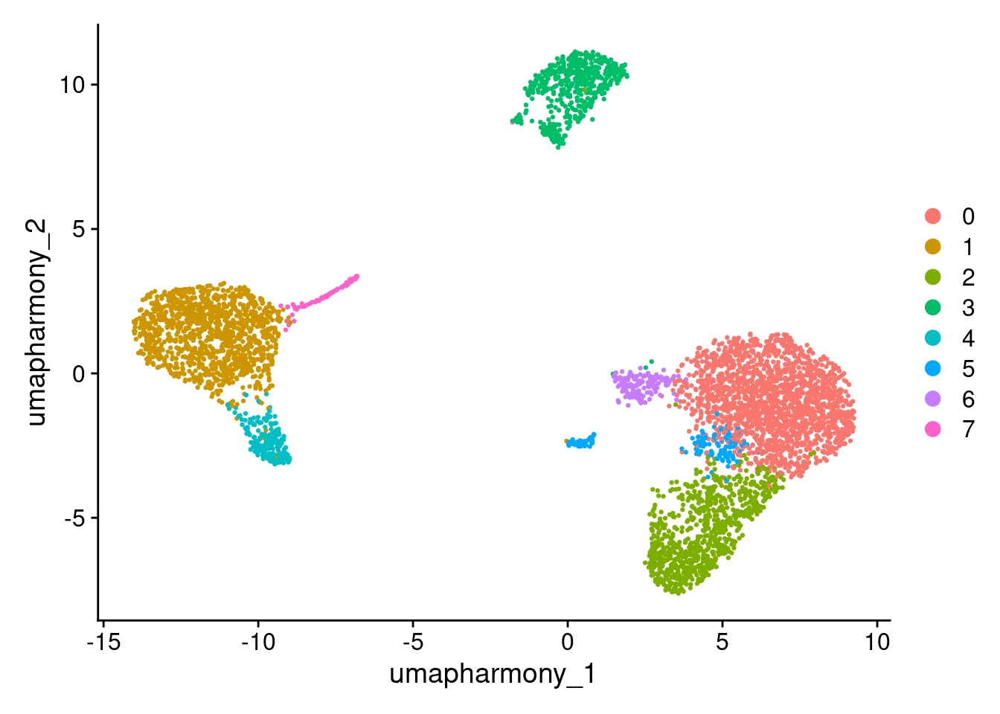
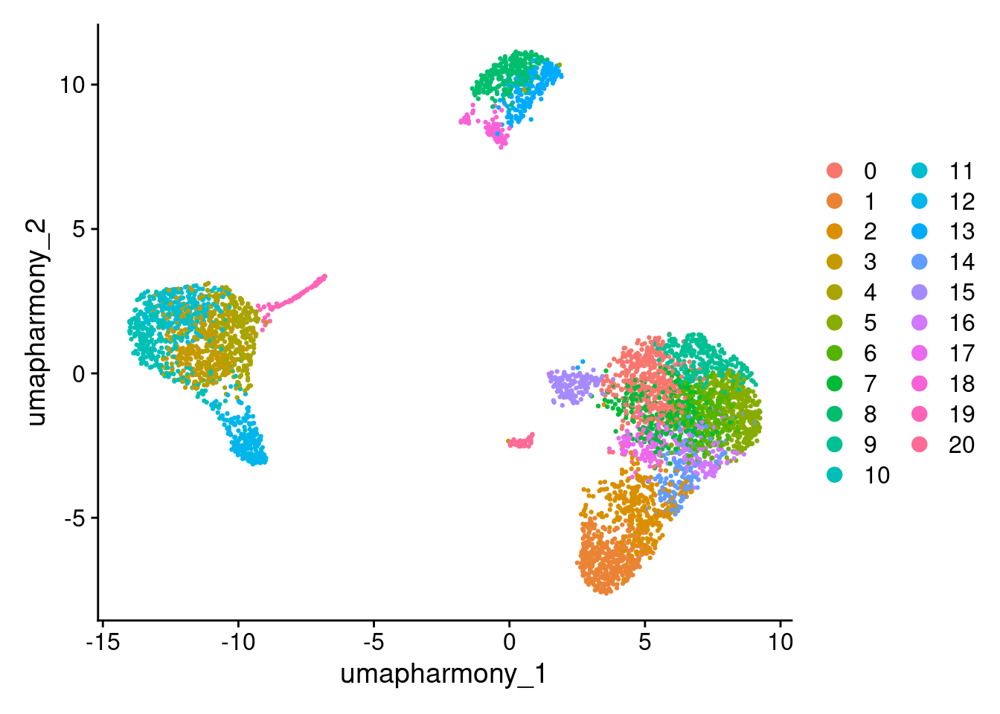
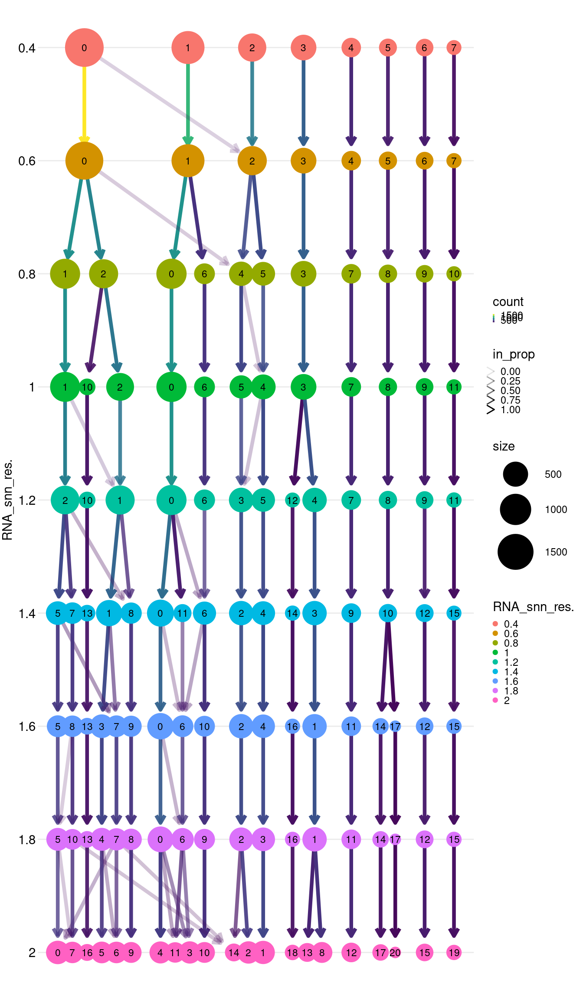
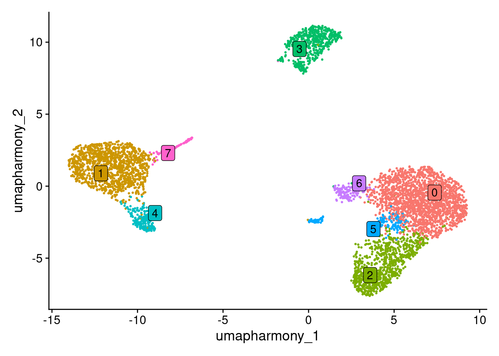

11 Clustering
11.1 Learning outcomes
- Explain how clustering groups cells with similar gene expression profiles, and how the resolution parameter controls how broadly or finely those clusters are defined
- Run the
FindNeighborsandFindClustersfunctions to cluster cells - Evaluate a clustree to distinguish resolutions that capture the variability of the data from those that over-cluster
11.2 Overview
11.3 Cluster cells
Seurat uses a graph-based clustering approach. Think of it like mapping a social network: each cell is a node, and connections are drawn to its nearest neighbours based on similar gene expression. Cells that are more tightly connected form communities which become your clusters.
This is what we ran at the end of the previous Harmony section.
seurat_object <- FindNeighbors(seurat_object, dims = 1:10, reduction = "harmony")
seurat_object <- FindClusters(seurat_object, resolution = 0.5)Two functions do the work:
-
FindNeighbors(): builds the graph by connecting each cell to its most similar neighbours in PCA space. -
FindClusters(): partitions that graph into communities. The resolution parameter controls the granularity: lower values produce fewer, broader clusters; higher values produce more, finer clusters.
Because the right resolution depends on your data, the next section shows how to test several values and pick the most biologically meaningful one.
Further reading
- Macosko et al. (2015) — early application of graph-based clustering to scRNA-seq that informed Seurat’s approach.
- SNN-Cliq — Xu & Su, Bioinformatics (2015) — introduced shared nearest-neighbour clustering for single-cell data.
-
PhenoGraph — Levine et al., Cell (2015) — the KNN + community-detection framework that Seurat’s
FindNeighbors/FindClusterspipeline is directly based on. -
Louvain algorithm — Blondel et al., Journal of Statistical Mechanics (2008) — the modularity-optimisation method used by default in
FindClusters.
Read in the harmonised data for this lesson.
Look at cluster IDs of the first 5 cells
head(Idents(seurat_object), 5)
#> AGGGCGCTATTTCC-1 GGAGACGATTCGTT-1 CACCGTTGTCGTAG-1
#> 1 5 4
#> TATCGTACACGCAT-1 TACGAGACCTATTC-1
#> 3 0
#> Levels: 0 1 2 3 4 5 6 7Check out the clusters.
DimPlot(seurat_object, reduction = "umap_harmony")
# Equivalent to
# DimPlot(seurat_object,reduction="umap", group.by="seurat_clusters")
# DimPlot(seurat_object,reduction="umap", group.by="RNA_snn_res.0.5")11.4 Choosing a cluster resolution
Why do we need to do this?
The best resolution is the one that reflects the cell types you want to work with. Too low and you merge biologically distinct populations into a single cluster; too high and you split one cell type into many fragments that don’t reflect genuine biology. The goal is a resolution that matches the granularity of your scientific question.
In practice, it is a good idea to test a range of resolutions and use the data to guide your choice. At this stage it is difficult to interpret the biology (e.g. how and what cells are clustering together) and may need to revisit this step after downstream annotation steps.
min_res <- 0.4
max_res <- 2
interval <- 0.2
seurat_object <- FindClusters(seurat_object, resolution = seq(min_res, max_res, interval), verbose = F)
# the different clustering created
names(seurat_object@meta.data)
#> [1] "orig.ident" "nCount_RNA"
#> [3] "nFeature_RNA" "ind"
#> [5] "stim" "cell"
#> [7] "multiplets" "percent.mt"
#> [9] "RNA_snn_res.0.6" "seurat_clusters"
#> [11] "pca_clusters" "harmony_clusters"
#> [13] "RNA_snn_res.0.4" "RNA_snn_res.0.8"
#> [15] "RNA_snn_res.1" "RNA_snn_res.1.2"
#> [17] "RNA_snn_res.1.4" "RNA_snn_res.1.6"
#> [19] "RNA_snn_res.1.8" "RNA_snn_res.2"
# Look at cluster IDs of the first 5 cells
head(Idents(seurat_object), 5)
#> AGGGCGCTATTTCC-1 GGAGACGATTCGTT-1 CACCGTTGTCGTAG-1
#> 3 17 12
#> TATCGTACACGCAT-1 TACGAGACCTATTC-1
#> 13 9
#> 21 Levels: 0 1 2 3 4 5 6 7 8 9 10 11 12 13 14 15 16 ... 20
DimPlot(seurat_object, reduction = "umap_harmony")
11.4.1 How to read a clustree
A clustree plots each cluster at each resolution as a node, with arrows showing where cells move as resolution increases. Use it to find the resolution that captures real biological structure without over-splitting.
Stable trunk — a large node that persists across several resolutions with arrows pointing straight down. Cells are consistently assigned to this cluster regardless of resolution. This is a cluster you can trust.
Branching point — a node that splits into two or more child nodes at higher resolution. A clean branch (one dominant arrow per child) suggests the split is capturing a genuine subpopulation. Multiple small arrows from the same parent (“scatter”) suggests noise rather than biology.
Over-clustering — at high resolutions, previously stable clusters start fragmenting with many small arrows going in multiple directions. The tree looks “bushy”. Cells are being split arbitrarily rather than by meaningful gene expression differences.
Choosing a resolution — pick the highest resolution at which the major trunks remain stable and branches are still clean. Pushing beyond this point adds clusters that don’t reflect biology.
library(clustree)
#> Loading required package: ggraph
#>
#> Attaching package: 'ggraph'
#> The following object is masked from 'package:sp':
#>
#> geometry
clustree(seurat_object, prefix = "RNA_snn_res.", show_axis=TRUE) +
theme(legend.key.size = unit(0.05, "cm"))
Exercise: Choosing a resolution
- Plot a clustree to decide how many clusters you have and what resolution captures them. Look for the point where stable trunks begin to fragment.
- Validate the resolution using DimPlot() — do the clusters look well-separated on the UMAP?
Tip: The name of the cluster is prefixed with ‘RNA_snn_res’ and the number of the resolution e.g. RNA_snn_res.0.4
# Add your DimPlots here
#DimPlot(seurat_object, reduction = "umap_harmony", group.by = "")Looking at the clustree, resolution 0.6 is a reasonable choice for this dataset:
- The major trunks are stable between 0.4 and 0.6 (no effect on clusters)
- Beyond 0.6 the tree becomes unstable, clusters begin fragmenting with scattered arrows, which suggests the splits no longer reflect genuine biology
- At 0.6, the number of clusters is consistent with the major PBMC cell types we expect to see (T cells, B cells, monocytes, NK cells) - giving us the right level of detail for the annotation and differential expression steps ahead
Set the resolution for 0.6:
Idents(seurat_object) <- seurat_object$RNA_snn_res.0.6Plot the UMAP with coloured clusters.
DimPlot(seurat_object, reduction = "umap_harmony", label = TRUE, repel = TRUE, label.box = TRUE) + NoLegend()